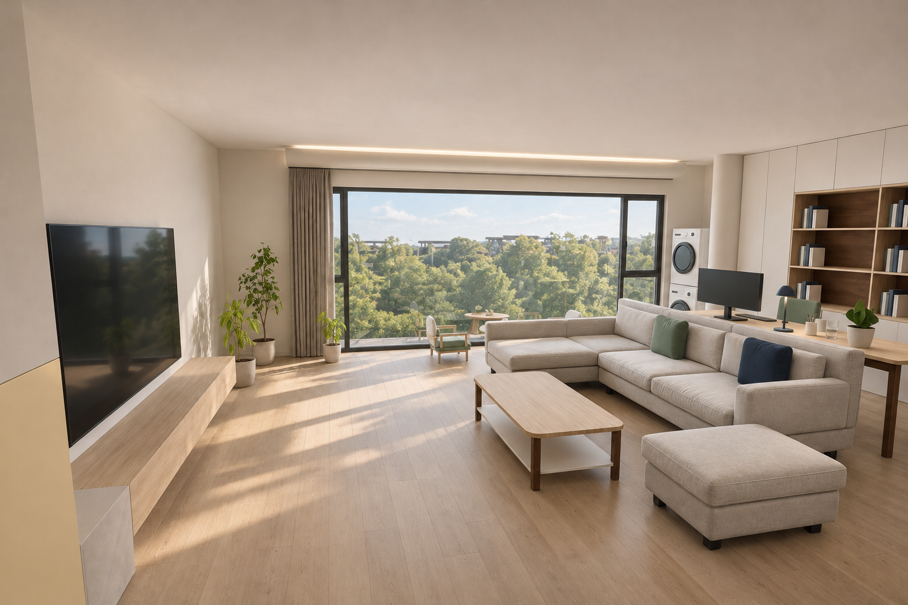
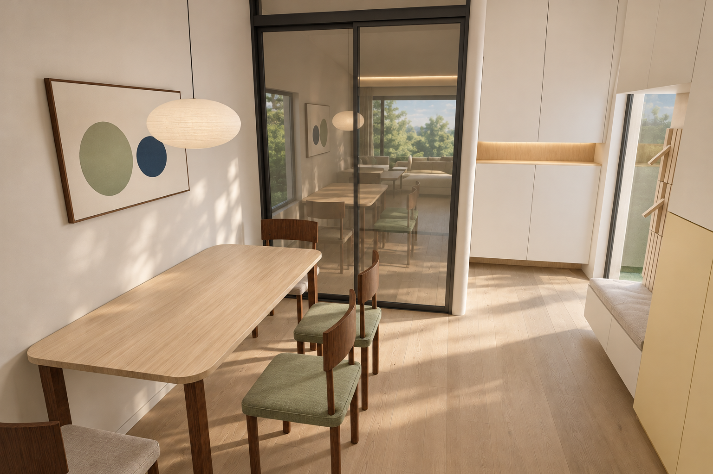
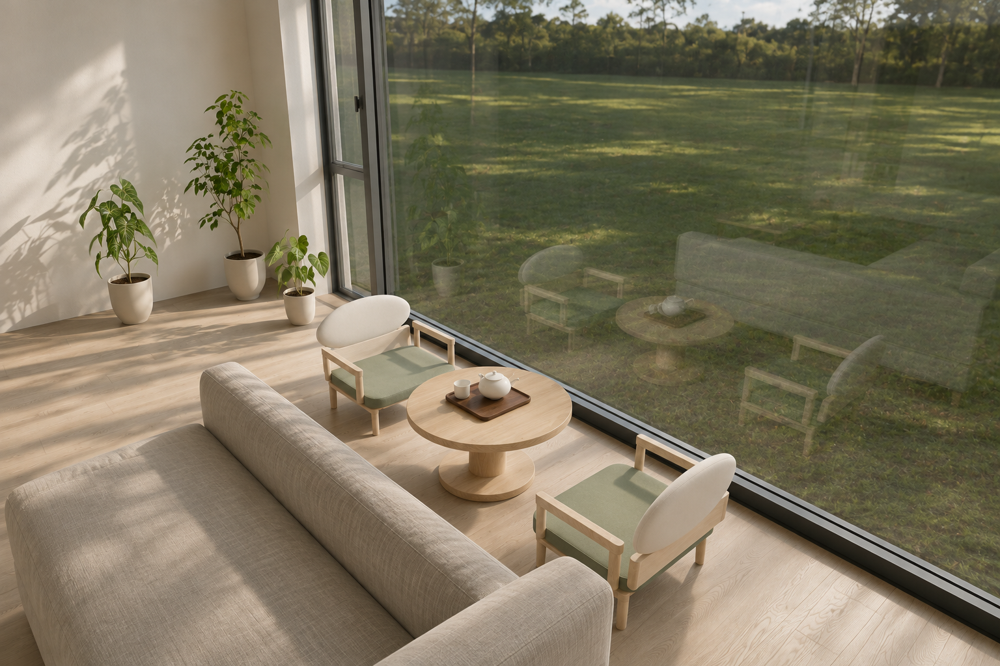
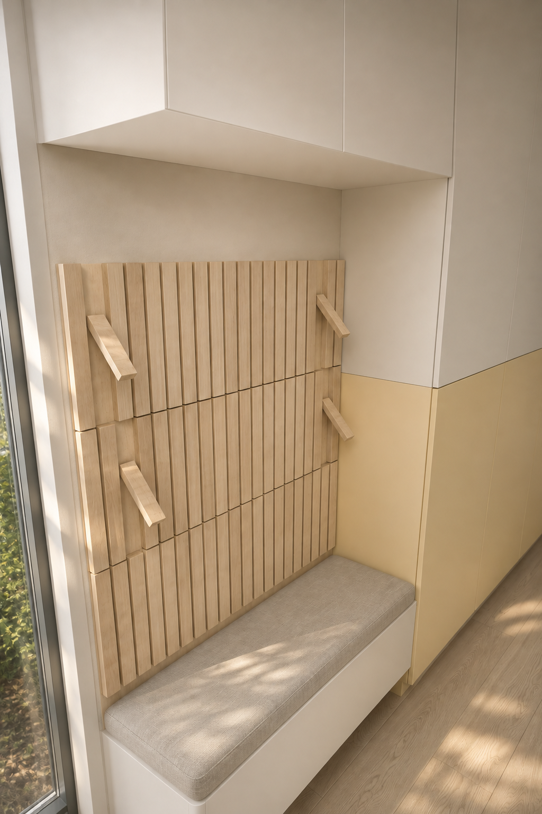
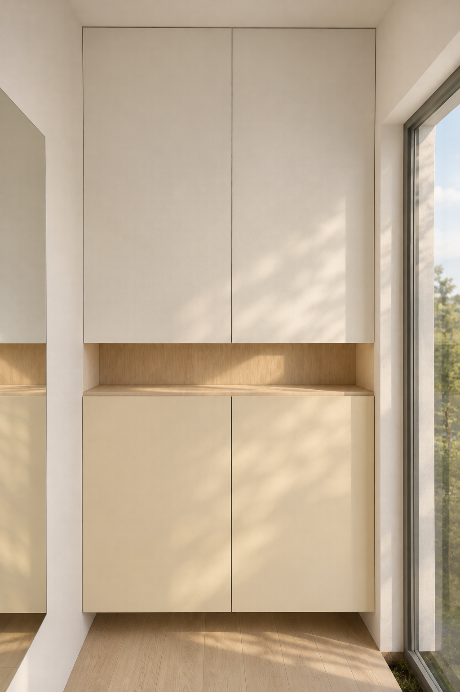
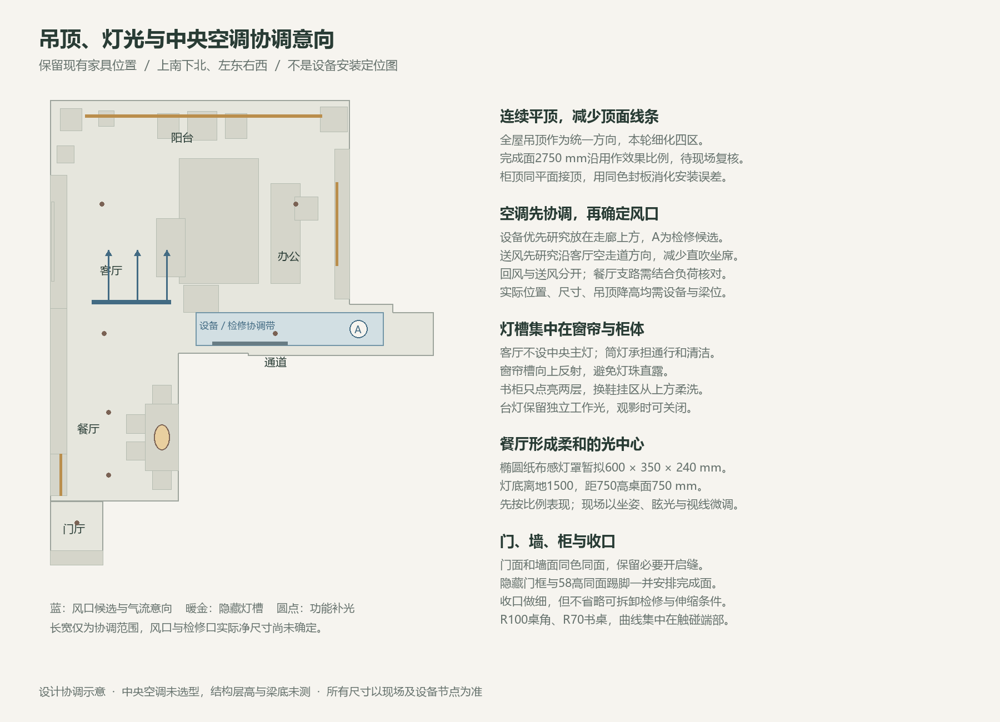

保留现有家具位置，把重点放在留白、织物、细木构件和有层次的灯光。电视墙简化，书柜补齐到顶收纳；餐厅用弧背椅和柔光吊灯形成独立的氛围。
85寸电视直接落在暖白墙上，移除原木框与细线。浅木圆角茶几配深木脚，米灰沙发用绿蓝抱枕点色；书柜中央保留六格展示，顶部改为封闭储物并接到顶面。

1600×800圆角桌继续靠墙，四张椅子改为深木细腿、弧形短靠背。绿蓝抽象画呼应客厅；一盏纸布感椭圆吊灯独立调光。

保留矮茶桌和两把低茶椅，让植物与电视右侧自然衔接。茶桌高380、椅座高230，视线仍能穿过整幅玻璃。

左右按走进家门时的方向。沿用通顶白柜与浅木挂板，灯光藏在上柜底与随手格；奶黄色继续只留在既有通长柜下段。


以平整暖白顶面统一四区，客厅采用无主灯，窗帘槽和柜内光承担氛围。中央空调尚未选型，下面研究设备、风口和检修的关系，具体降高和开口尺寸待梁位与设备确定。
